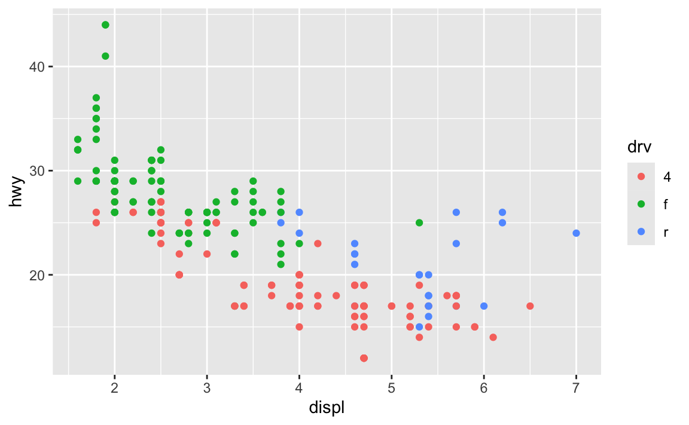
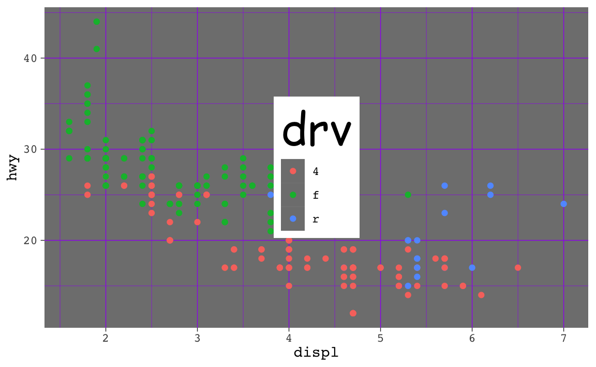
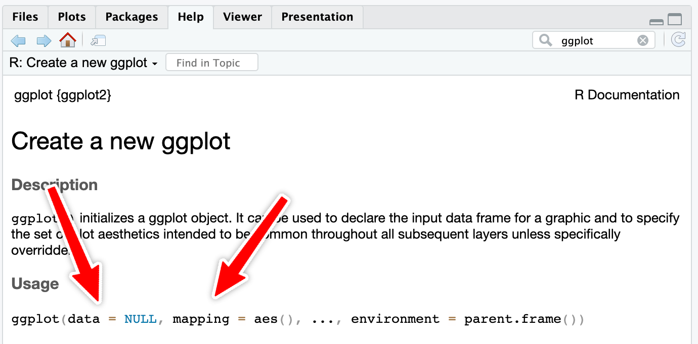
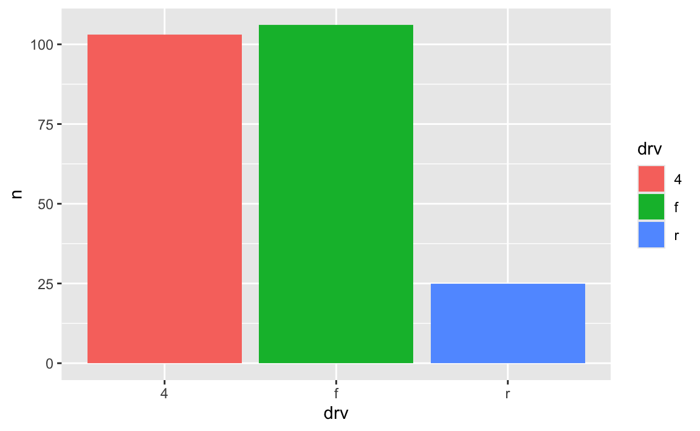
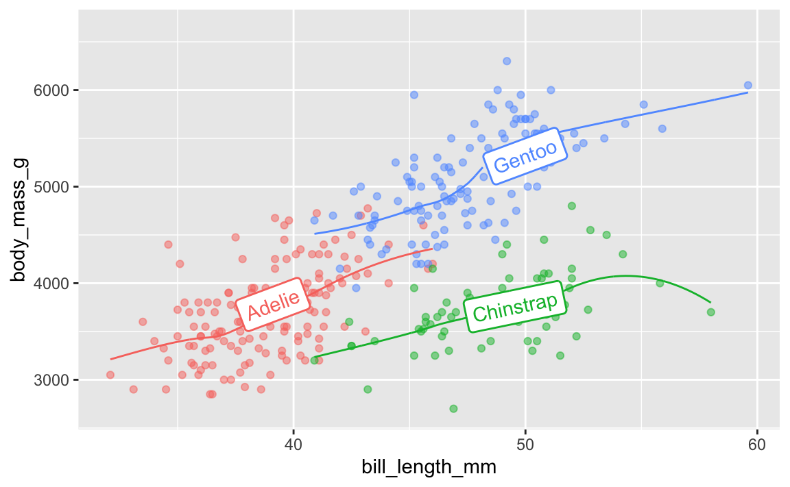
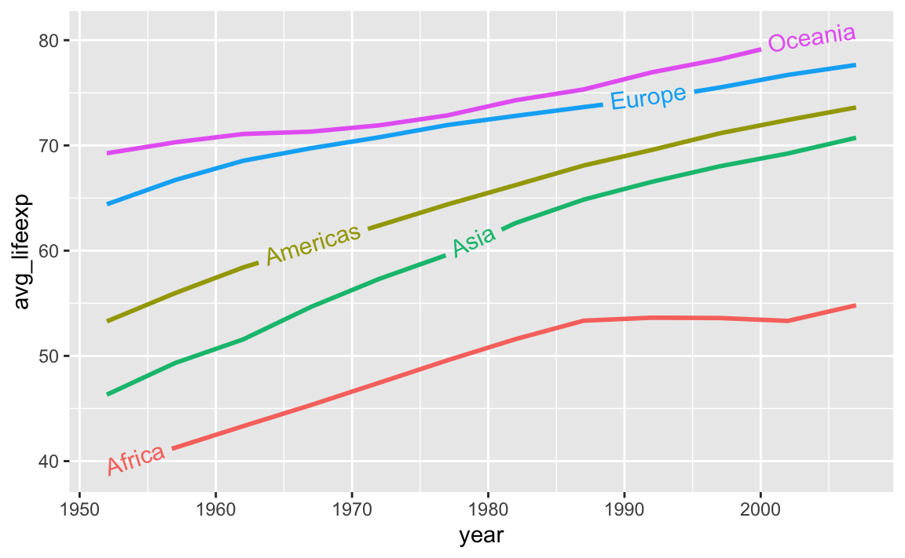
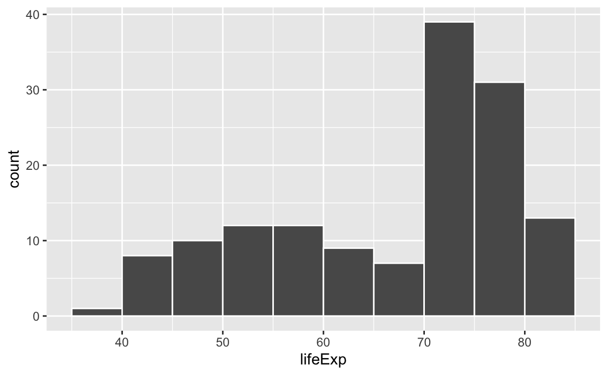
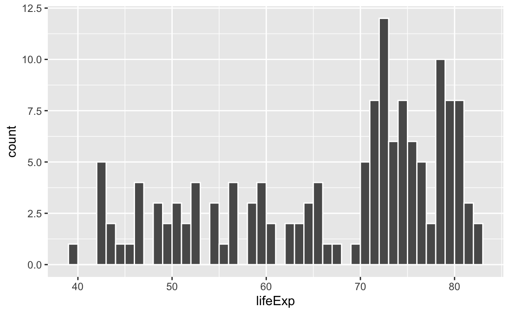
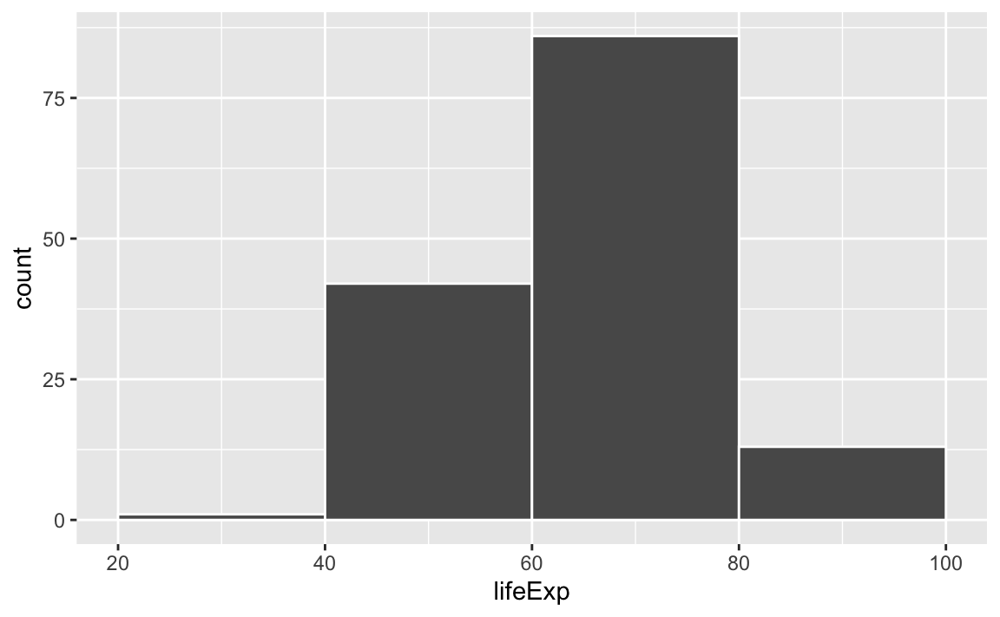
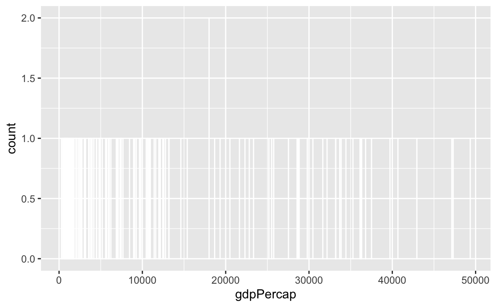

ugly_plot <- ggplot(mpg, aes(x = displ, y = hwy, color = drv)) +
geom_point()
ugly_plot
Reminder! The final deadline for all assignments are listed in the syllabus (details)
Tuesday June 25, 2024 at 7:11 PM
Hi everyone!
I’m really happy with how you all did with exercises 5 and 6 (you made some legitimately hideous plots!).
I got a lot of similar questions and I saw some common issues in the assignments, so like normal, I’ve compiled them all here. Enjoy!
One thing that trips often trips people up is the difference between installing and loading a package.
The best analogy I’ve found for this is to think about your phone. When you install an app on your phone, you only do it once. When you want to use that app, you tap on the icon to open it. Install once, use multiple times.
The same thing happens with R. If you look at the Packages panel in RStudio, you’ll see a list of all the different packages installed on your computer. But just because a package is installed doesn’t mean you can automatically start using it—you have to load it in your R session using library(nameofthepackage). Install once, use multiple times.
Every time you restart RStudio and every time you render a Quarto document, R starts with no packages loaded. You’re responsible for loading those in your document. That’s why the beginning of every document typically has a bunch of library() lines, like this:
As mentioned in this earlier list of tips, make sure you don’t include code to install packages in your Quarto files. Like, don’t include install.packages("ggtext") or whatever. If you do, R will reinstall that package every time you render your document, which is excessive. All you need to do is load the package with library()
To help myself remember to not include package installation code in my document, I make an effort to either install packages with my mouse by clicking on the “Install” button in the Packages panel in RStudio, or only ever typing (or copying/pasting) code like install.packages("whatever") directly in the R console and never putting it in a chunk.
Absolutely! So far, all your Quarto documents have had code included in them, so they’re not really fit for public consumption—you wouldn’t really want to distribute these PDFs as official reports or anything.
But if you set echo: false in the options of your chunks, you can hide the code from the final output so that people only see the figures and tables that you make.
```{r}
#| echo: false
# This will make a plot but not include the code for it in the rendered document
ggplot(mpg, aes(x = displ, y = cty, color = drv)) +
geom_point()
```This means that you can make nice clean reports that nobody will know were made with R and Quarto. You can even use fancy Quarto templates and make beautiful output. See these links for examples and details:
theme() but when I used ggsave(), none of them actually saved. Why?This is a really common occurrence—don’t worry! And it’s easy to fix!
In the code I gave you in exercise 5, you stored the results of ggplot() as an object named ugly_plot, like this (this isn’t the same data as exercise 5, but shows the same general principle):

That ugly_plot object contains the basic underlying plot that you wanted to adjust. You then used it with {ggThemeAssist} to make modifications, something like this:
ugly_plot +
theme_dark(base_family = "mono") +
theme(
legend.position = c(0.5, 0.5),
legend.title = element_text(family = "Comic Sans MS", size = rel(3)),
panel.grid = element_line(color = "purple")
)
## Warning: A numeric `legend.position` argument in `theme()` was deprecated in ggplot2
## 3.5.0.
## ℹ Please use the `legend.position.inside` argument of `theme()` instead.
That’s great and nice and ugly and it displays in your document just fine. If you then use ggsave() like this:
…you’ll see that it actually doesn’t save all the theme() changes. That’s because it’s saving the ugly_plot object, which is just the underlying base plot before adding theme changes.
If you want to keep the theme changes you make, you need to store them in an object, either overwriting the original ugly_plot object, or creating a new object:
Absolutely! We don’t have time in this class to cover tables, but there’s a whole world of packages for making beautiful tables with R. Four of the more common ones are {tinytable}, {gt}, {kableExtra}, and {flextable}:
| Package |
Output support
|
Notes | |||
|---|---|---|---|---|---|
| HTML | Word | ||||
| {tinytable} | Great | Great | Okay | Examples | Simple, straightforward, and lightweight. It has fantastic support for HTML (though not as fancy as {gt}, and it has the absolute best support for PDF. |
| {gt} | Great | Okay | Okay | Examples | Has the goal of becoming the “grammar of tables” (hence “gt”). It is supported by developers at Posit and gets updated and improved regularly. It’ll likely become the main table-making package for R. |
| {kableExtra} | Great | Great | Okay | Examples | Works really well for HTML output and has great support for PDF output, but development has stalled for the past couple years and it seems to maybe be abandoned, which is sad. |
| {flextable} | Great | Okay | Great | Examples | Works really well for HTML output and has the best support for Word output. It’s not abandoned and gets regular updates. |
Here’s a quick illustration of these four packages. All four are incredibly powerful and let you do all sorts of really neat formatting things ({gt} even makes interactive HTML tables!), so make sure you check out the documentation and examples. I personally use {tinytable} and {gt} for all my tables, depending on which output I’m working with. When rendering to HTML, I use {tinytable} or {gt}; when rendering to PDF I use {tinytabe}; when rendering to Word I use {flextable}.
library(tinytable)
cars_summary |>
select(
Drive = drv, N = n, Average = avg_mpg, Median = median_mpg,
Minimum = min_mpg, Maximum = max_mpg
) |>
tt() |>
group_tt(
i = list("1999" = 1, "2008" = 4),
j = list("Highway MPG" = 3:6)
) |>
format_tt(j = 3, digits = 4) |>
style_tt(i = c(1, 5), bold = TRUE, line = "b", line_width = 0.1, line_color = "#dddddd") |>
style_tt(j = 2:6, align = "c")| Highway MPG | |||||
|---|---|---|---|---|---|
| Drive | N | Average | Median | Minimum | Maximum |
| 4 | 49 | 18.84 | 17 | 15 | 26 |
| f | 57 | 27.91 | 26 | 21 | 44 |
| r | 11 | 20.64 | 21 | 16 | 26 |
| 4 | 54 | 19.48 | 19 | 12 | 28 |
| f | 49 | 28.45 | 29 | 17 | 37 |
| r | 14 | 21.29 | 21 | 15 | 26 |
library(gt)
cars_summary |>
gt() |>
cols_label(
drv = "Drive",
n = "N",
avg_mpg = "Average",
median_mpg = "Median",
min_mpg = "Minimum",
max_mpg = "Maximum"
) |>
tab_spanner(
label = "Highway MPG",
columns = c(avg_mpg, median_mpg, min_mpg, max_mpg)
) |>
fmt_number(
columns = avg_mpg,
decimals = 2
) |>
tab_options(
row_group.as_column = TRUE
)| year | Drive | N |
Highway MPG
|
|||
|---|---|---|---|---|---|---|
| Average | Median | Minimum | Maximum | |||
| 1999 | 4 | 49 | 18.84 | 17 | 15 | 26 |
| 1999 | f | 57 | 27.91 | 26 | 21 | 44 |
| 1999 | r | 11 | 20.64 | 21 | 16 | 26 |
| 2008 | 4 | 54 | 19.48 | 19 | 12 | 28 |
| 2008 | f | 49 | 28.45 | 29 | 17 | 37 |
| 2008 | r | 14 | 21.29 | 21 | 15 | 26 |
library(kableExtra)
cars_summary |>
ungroup() |>
select(-year) |>
kbl(
col.names = c("Drive", "N", "Average", "Median", "Minimum", "Maximum"),
digits = 2
) |>
kable_styling() |>
pack_rows("1999", 1, 3) |>
pack_rows("2008", 4, 6) |>
add_header_above(c(" " = 2, "Highway MPG" = 4))
Highway MPG
|
|||||
|---|---|---|---|---|---|
| Drive | N | Average | Median | Minimum | Maximum |
| 1999 | |||||
| 4 | 49 | 18.84 | 17 | 15 | 26 |
| f | 57 | 27.91 | 26 | 21 | 44 |
| r | 11 | 20.64 | 21 | 16 | 26 |
| 2008 | |||||
| 4 | 54 | 19.48 | 19 | 12 | 28 |
| f | 49 | 28.45 | 29 | 17 | 37 |
| r | 14 | 21.29 | 21 | 15 | 26 |
library(flextable)
cars_summary |>
rename(
"Year" = year,
"Drive" = drv,
"N" = n,
"Average" = avg_mpg,
"Median" = median_mpg,
"Minimum" = min_mpg,
"Maximum" = max_mpg
) |>
mutate(Year = as.character(Year)) |>
flextable() |>
colformat_double(j = "Average", digits = 2) |>
add_header_row(values = c(" ", "Highway MPG"), colwidths = c(3, 4)) |>
align(i = 1, part = "header", align = "center") |>
merge_v(j = ~ Year) |>
valign(j = 1, valign = "top")
| Highway MPG | |||||
|---|---|---|---|---|---|---|
Year | Drive | N | Average | Median | Minimum | Maximum |
1999 | 4 | 49 | 18.84 | 17 | 15 | 26 |
f | 57 | 27.91 | 26 | 21 | 44 | |
r | 11 | 20.64 | 21 | 16 | 26 | |
2008 | 4 | 54 | 19.48 | 19 | 12 | 28 |
f | 49 | 28.45 | 29 | 17 | 37 | |
r | 14 | 21.29 | 21 | 15 | 26 | |
You can also create more specialized tables for specific situations, like side-by-side regression results tables with {modelsummary} (which uses {gt}, {kableExtra}, or {flextable} behind the scenes)
library(modelsummary)
model1 <- lm(hwy ~ displ, data = mpg)
model2 <- lm(hwy ~ displ + drv, data = mpg)
modelsummary(
list(model1, model2),
stars = TRUE,
# Rename the coefficients
coef_rename = c(
"(Intercept)" = "Intercept",
"displ" = "Displacement",
"drvf" = "Drive (front)",
"drvr" = "Drive (rear)"),
# Get rid of some of the extra goodness-of-fit statistics
gof_omit = "IC|RMSE|F|Log",
# Use {tinytable}
output = "tinytable"
)| (1) | (2) | |
|---|---|---|
| + p < 0.1, * p < 0.05, ** p < 0.01, *** p < 0.001 | ||
| Intercept | 35.698*** | 30.825*** |
| (0.720) | (0.924) | |
| Displacement | -3.531*** | -2.914*** |
| (0.195) | (0.218) | |
| Drive (front) | 4.791*** | |
| (0.530) | ||
| Drive (rear) | 5.258*** | |
| (0.734) | ||
| Num.Obs. | 234 | 234 |
| R2 | 0.587 | 0.736 |
| R2 Adj. | 0.585 | 0.732 |
data = whatever and mapping = aes() in ggplot() anymore? Do we not have to use argument names?In the first few sessions, you wrote code that looked like this:
In R, you feed functions arguments like data and mapping and I was having you explicitly name the arguments, like data = mpg and mapping = aes(...).
In general it’s a good idea to use named arguments, since it’s clearer what you mean.
However, with really common functions like ggplot(), you can actually skip the names. If you look at the documentation for ggplot() (i.e. run ?ggplot in your R console or search for “ggplot” in the Help panel in RStudio), you’ll see that the first expected argument is data and the second is mapping.

If you don’t name the arguments, like this…
…R will assume that the first argument (mpg) really means data = mpg and that the second really means mapping = aes(...).
If you don’t name the arguments, the order matters. This won’t work because ggplot will think that the aes(...) stuff is really data = aes(...):
If you do name the arguments, the order doesn’t matter. This will work because it’s clear that data = mpg (even though this feels backwards and wrong):
This works with all R functions. You can either name the arguments and put them in whatever order you want, or you can not name them and use them in the order that’s listed in the documentation.
In general, you should name your arguments for the sake of clarity. For instance, with aes(), the first argument is x and the second is y, so you can technically do this:
That’s nice and short, but you have to remember that displ is on the x-axis and hwy is on the y-axis. And it gets extra confusing once you start mapping other columns:
All the other aesthetics like color and size are named, but x and y aren’t, which just feels… off.
So use argument names except for super common things like ggplot() and the {dplyr} verbs like mutate(), group_by(), filter(), etc.
As you’ve read, double encoding aesthetics can be helpful for accessibility and printing reasons—for instance, if points have colors and shapes, they’re still readable by people who are colorblind or if the image is printed in black and white:
Sometimes the double encoding can be excessive though, and you can safely remove legends. For example, in exercises 3 and 4, you made bar charts showing counts of different things (words spoken in The Lord of the Rings; pandemic-era construction projects in New York City), and lots of you colored the bars, which is great!
car_counts <- mpg |>
group_by(drv) |>
summarize(n = n())
ggplot(car_counts, aes(x = drv, y = n, fill = drv)) +
geom_col()
Car drive here is double encoded: it’s on the x-axis and it’s the fill. That’s great, but having the legend here is actually a little excessive. Both the x-axis and the legend tell us what the different colors of drives are (four-, front-, and rear-wheeled drives), so we can safely remove the legend and get a little more space in the plot area:
Yes! Later in the semester we’ll cover annotations, but in the meantime, you can check out a couple packages that let you directly label geoms that have been mapped to aesthetics.
The {geomtextpath} package lets you add labels directly to paths and lines with functions like geom_textline() and geom_labelline() and geom_labelsmooth().
Like, here’s the relationship between penguin bill lengths and penguin weights across three different species:
# This isn't on CRAN, so you need to install it by running this:
# remotes::install_github("AllanCameron/geomtextpath")
library(geomtextpath)
library(palmerpenguins) # Penguin data
# Get rid of the rows that are missing sex
penguins <- penguins |> drop_na(sex)
ggplot(
penguins,
aes(x = bill_length_mm, y = body_mass_g, color = species)
) +
geom_point(alpha = 0.5) + # Make the points a little bit transparent
geom_labelsmooth(
aes(label = species),
# This spreads the letters out a bit
text_smoothing = 80
) +
# Turn off the legend bc we don't need it now
guides(color = "none")
And the average continent-level life expectancy across time:
library(gapminder)
gapminder_lifeexp <- gapminder |>
group_by(continent, year) |>
summarize(avg_lifeexp = mean(lifeExp))
ggplot(
gapminder_lifeexp,
aes(x = year, y = avg_lifeexp, color = continent)
) +
geom_textline(
aes(label = continent, hjust = continent),
linewidth = 1, size = 4
) +
guides(color = "none")
In exercise 6, a lot of you ran into issues with the GDP per capita histogram. The main issue was related to bin widths.
Histograms work by taking a variable, cutting it up into smaller buckets, and counting how many rows appear in each bucket. For example, here’s a histogram of life expectancy from gapminder, with the binwidth argument set to 5:
library(tidyverse)
library(gapminder)
gapminder_2007 <- gapminder |>
filter(year == 2007)
ggplot(gapminder_2007, aes(x = lifeExp)) +
geom_histogram(binwidth = 5, color = "white", boundary = 0)
The binwidth = 5 setting means that each of those bars shows the count of countries with life expectancies in five-year buckets: 35–40, 40–45, 45–50, and so on.
If we change that to binwidth = 1, we get narrower bars because we have smaller buckets—each bar here shows the count of countries with life expectancies between 50–51, 51–52, 52–53, and so on.
ggplot(gapminder_2007, aes(x = lifeExp)) +
geom_histogram(binwidth = 1, color = "white", boundary = 0)
If we change it to binwidth = 20, we get huge bars because the buckets are huge. Now each bar shows the count of countries with life expectancies between 20–40, 40–60, 60–80, and 80–100:
ggplot(gapminder_2007, aes(x = lifeExp)) +
geom_histogram(binwidth = 20, color = "white", boundary = 0)
There is no one correct good universal value for the bin width and it depends entirely on your data.
Lots of you ran into an issue when copying/pasting code from the example, where one of the example histograms used binwidth = 1, since that was appropriate for that variable.
Watch what happens if you plot a histogram of GDP per capita using binwidth = 1:
ggplot(gapminder_2007, aes(x = gdpPercap)) +
geom_histogram(binwidth = 1, color = "white", boundary = 0)
haha yeah that’s delightfully wrong. Each bar here is showing the count of countries with GDP per capita is $10,000–$10,001, then $10,001–$10.002, then $10,002–$10,003, and so on. Basically every country has its own unique GDP per capita, so the count for each of those super narrow bars is 1 (there’s one exception where two countries fall in the same bucket, which is why the y-axis goes up to 2). You can’t actually see any of the bars here because they’re too narrow—all you can really see is the white border around the bars.
To actually see what’s happening, you need a bigger bin width. How much bigger is up to you. With life expectancy we played around with 1, 5, and 20, but those bucket sizes are waaaay too small for GDP per capita. Try bigger values instead. But again, there’s no right number here!